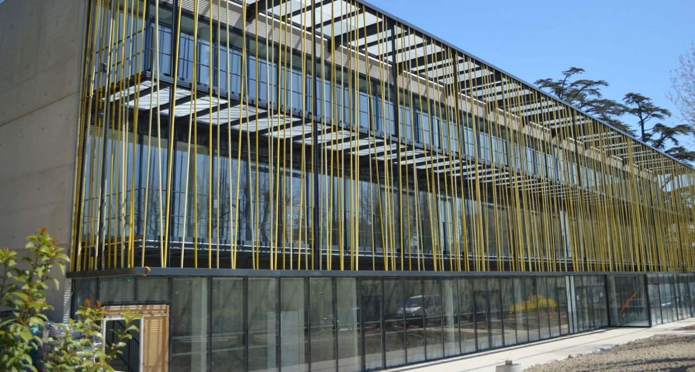

Université : IUT
Je suis étudiant à l'Université d'Aix-en-Provence. J'ai choisi cette formation car elle me permet de ne fermer aucune porte et d'explorer toutes les facettes du domaine que j'ai sélectionné. De plus, elle offre une première immersion dans le monde professionnel, et ce, de deux manières. Tout d'abord, grâce aux travaux de groupe, que nous appelons des SAÉ (Situations d'Apprentissage et d'Évaluation). Ces projets nous permettent de réaliser des missions en groupe, d'observer notre évolution au sein de celui-ci et de trouver naturellement notre place. Le deuxième aspect professionnel de cette formation est l'alternance. Dans mon cursus à l'IUT d'Aix-en-Provence, il est possible d'accéder à l'alternance dès la deuxième année. Cela nous assure d'avoir été formés au maximum avant d'entrer pleinement dans le monde professionnel.
Diplome : BUT informatique
Mon diplôme est un Bachelor Universitaire de Technologie (BUT) en trois ans. J'ai choisi cette formation pour son équilibre entre une insertion rapide dans la vie active et la possibilité de poursuivre des études, comme un master ou une école d'ingénieur.
En plus des cours d'informatique, ce programme inclut des enseignements plus vaste mais tout aussi essentiels en anglais, droit ou encore comptabilité, ce qui élargit nos compétences et nous prépare à un environnement professionnel varié.
Cette diversité nous permet d'acquérir une expertise technique tout en développant une vision globale des enjeux professionnels.